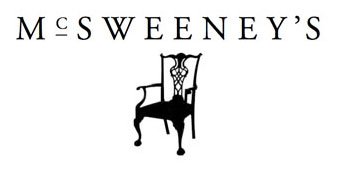

 Let Us Cater Your Next Intervention Penis Injured In a Deluxe Bathtime Bunny A Traffic Report Interrupted By A Stolen Sandwich Additional Reporting Gorilla Nanny Life After a Total Hack The Hologram Invasion When The Holograms Invade 28 Political Facts Pundits Won't Discuss Political Fiction: Murder on the Campaign Trail Take These Broken Wings Stress: An Energy Source Office Colds How to Write a Satirical Pop Culture Book Field Guide to Your Office Nemesis Approval Matrix Baldwin, Gore Face Down Orgasm Pandemic Advance Excerpts From Tiger Woods' Press Conference How Cool Would a Microsoft Store Be? Bank Robber Etiquette Unanticipated Bike Share FAQs 7 Lesser Known Autumn Facts Thanksgiving Facts Where Cellphone Numbers Go To Die College Shortlist Does Not Include Riots Revisiting Our Work From Home Policy Lesser Known Social Media Statistics Other Announcements Slap Prevention Infographics How To Field Dress A Reindeer Fifteen Shades of Testosterone Puppets in Classic Books
Approval Matrix Baldwin, Gore Face Down Orgasm Pandemic Advance Excerpts From Tiger Woods' Press Conference How Cool Would a Microsoft Store Be? Bank Robber Etiquette Unanticipated Bike Share FAQs 7 Lesser Known Autumn Facts Thanksgiving Facts Where Cellphone Numbers Go To Die
College Shortlist Does Not Include Riots Revisiting Our Work From Home Policy Lesser Known Social Media Statistics Other Announcements Slap Prevention Infographics How To Field Dress A Reindeer Fifteen Shades of Testosterone Puppets in Classic Books